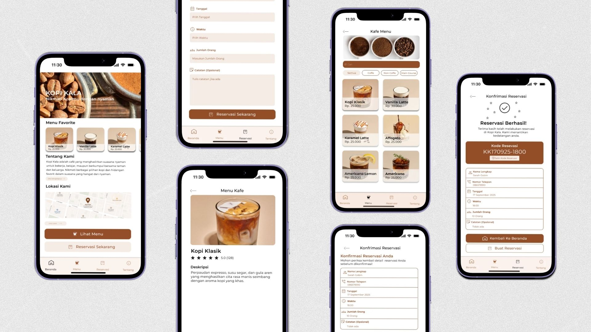
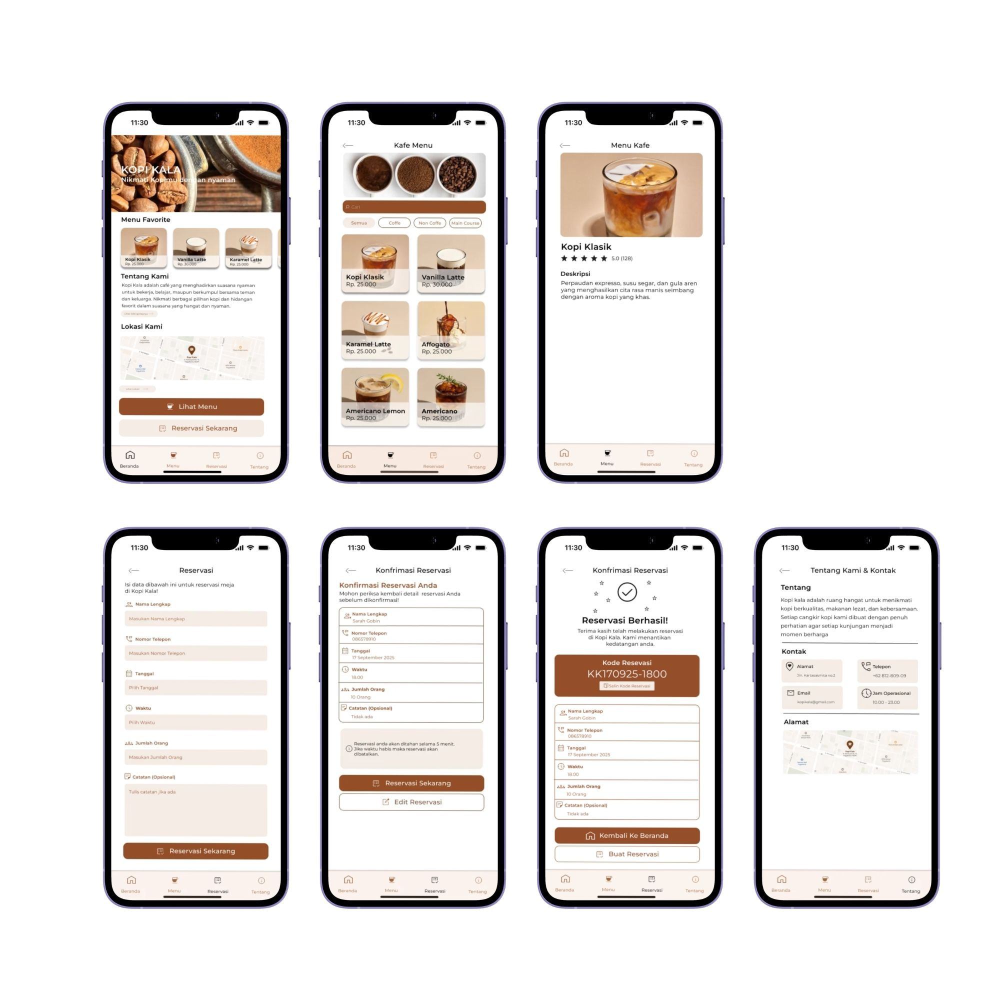

Coffee Kala
A café mobile app that helps customers explore the menu and reserve a table, all in one place.

One app for the menu, the café, and your table
This project started from my own experience as a café customer: to find the menu, the prices, the opening hours, and a way to reserve a table, I had to open several different apps.
Overview
Coffee Kala is a café mobile app that brings the menu, café information, and table reservations together in one simple experience.
Problem
Many cafés spread their information across Instagram, Google Maps, and WhatsApp. Customers switch between apps to find information and make a reservation, which makes the whole process slow.
User
Café customers like Sarah, a final-year student who wants to see the menu and prices, check availability, and reserve a table without messaging an admin.
Scope
Problem research from personal experience, persona, user journey, problem statement, How Might We questions, information architecture, wireframes, high-fidelity UI, and a Figma prototype.
Where the café experience breaks down
I based my research on my own experience of finding and visiting cafés. Four problems kept coming up.
Hard to find complete information
The menu, hours, and prices are scattered across Instagram, Google Maps, and WhatsApp, so it's hard to find everything in one place, especially on the go.
Reservations aren't convenient
Customers have to contact the admin directly through WhatsApp or phone, which makes reserving slow and inflexible.
Incomplete menu information
Menus are often just photos, without clear prices, sizes, or descriptions, so it's difficult to choose before visiting.
Information scattered across platforms
Customers open several apps to find the menu, location, opening hours, and reservation details.
"I want to browse the menu, make a reservation, and get all café information in one app without having to switch between platforms."Sarah, 23, student persona (based on my own café experience)
Sarah, 23, student
Goals
- Find complete café information in one platform
- See the menu with prices before visiting
- Reserve a table quickly and easily
- Save time when visiting a café
Frustrations
- Doesn't know if tables are still available
- Has to contact the admin on WhatsApp to reserve
- Opens several platforms to find café information
- Menu information is incomplete
Turning the problems into design opportunities
What I mapped Sarah's journey, wrote a problem statement, and turned each pain point into a How Might We question.
Why The journey shows exactly where her experience drops, so I know which moments the design has to fix.
How The four steps of her journey, the problem statement, and the questions are below.
1. Searching for information
Searches through Google Maps or social media. Curious, but slightly confused.
Opportunity: show all café information in one platform.
2. Browsing the app
Checks the menu, prices, hours, and promotions. Feels more confident once the information is there.
Opportunity: show a complete menu with photos, prices, and descriptions.
3. Making a reservation
Picks a date and time and fills in her details. Often confused, because reserving isn't easy or fast.
Opportunity: provide a simple reservation feature.
4. Visiting the café
Arrives at the booked time. Comfortable, because the visit is planned.
Opportunity: send a reservation confirmation with the details.
Sarah, a final-year student, needs a café app that provides complete information and table reservations in one platform, because she often has difficulty finding complete information and has to switch between platforms before visiting a café.Problem statement
How might we…
…help customers know table availability before visiting the café?
…make it easier to reserve a table without contacting the admin on WhatsApp?
…present complete menu information so customers can choose before visiting?
…provide all café information in one app so customers don't switch between platforms?
From wireframe to final design
What Low-fidelity wireframes first, then the high-fidelity screens.
Why Wireframes let me settle the layout and the main flows before spending time on visuals.
How The final design focuses on exploring the menu, menu details, café information, and table reservation. Four design decisions shaped it:
Brown, inspired by coffee beans
I chose brown as the main color because it comes from the color of coffee beans, so the app feels like a café from the first screen.
Complete menu details
Each menu item shows a photo, name, rating, description, and price, so customers can decide before they visit.
A simple reservation form
Reserving takes a few fields (name, phone, date, time, guests, optional notes) followed by a confirmation, with no WhatsApp needed.
Café information in one place
Description, address, contact, opening hours, and a map sit together, so customers don't search through other apps.

Getting feedback and refining
What A quick feedback round on the design.
Why This was a one-week solo project, so I used a quick feedback round to catch issues instead of running a formal usability test.
How The feedback was that the button color needed to be stronger. I changed it so the main actions stand out clearly.
What came out of it
Result
A café app that brings the menu, café information, and table reservations into one place. Each of the four pain points has a matching answer in the design, and the final screens are ready as a Figma prototype.
Feedback
The feedback I received was that the button color needed to be stronger. I updated the button so the main actions are easy to spot.
Lesson learned
With one week and no formal research, I learned to start from a problem I know well and keep the scope to the essentials: the menu, the café information, and reservations. The button feedback also showed me how a small visual detail decides whether users notice the main action.